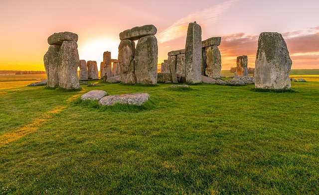

Trabalhando com imagens
Formatos mais comum
- JPEG/JPG: em geral para fotos de qualquer natureza com suporte a milhões de cores e com compressão.
- GIF: Suporta somente 256 cores,usado para desenho,suporta animação e transparência básica.
- PNG: muito bom para fotos, suporte a milhões de cores, compressão e transparência
- SVG: formato vetorial, ou seja, composto por n´s, segmentos, linhas.Bom para ilustrações e para casos em que será necessário redimensionar a imagem
Exemplos de uso



Ruínas do Stonehenge(foto tirada em 21/12/2012)